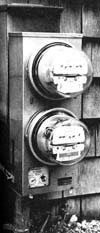
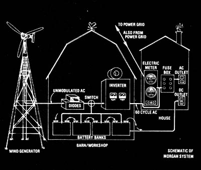

Not all electric companies nave to be cajoledinto letting their customers install windplants and Gemini Synchronous Inverters ... as the following report proves.
Three years ago, when Rowland Morgan installed a windplant (complete with Gemini Synchronous Inverter) at his Little Compton, Rhode Island home, he told officials of the Narragansett Electric Company that-because of the Gemini inverter-his wind system would actually run his electric meter backwards. The company's engineers refused to believe Rowland's claim ... and visited the Morgan home for proof. When they left, they were convinced that the wind-generator/GSI combination would-indeed-do what its owner said it would do.
Did the power company threaten to turn off Morgan's lights? Did they ask him to disconnect the Gemini inverters? Fortunately, no (although many other electric utilities around the country have been known to do such things).
In fact, not only did the Narragansett Electric Company not ask Mr. Morgan to disconnect the Gemini inverter ... they footed the bill for connecting the equipment to the utility grid (and for installing equipment to measure and record how much electricity Rowland's windplant is putting back Into the company's lines). And Narragansett Is reportedly thinking about paying the Morgan family for their surplus electricity! ("They've been very decent about the whole thing," Rowland admits. "We had to press them a bit at first ... but they came around.")
Rowland Morgan (who is retired) and his family installed their wind power system as a family project three years ago, immediately after moving to their present home. The system itself is extremely straightforward ... it consists of three main components: [1] the windplant, [2] the battery storage area, and [3] the Gemini Synchronous Inverter.
The Morgan system's wind generator is a three-bladed Elektro unit of the type that used to be marketed by Henry Clews's Solar Wind firm. (Rowland, in fact, bought his present unit from the Clews company, but that company has since been sold to Enertech Corp., P.O. Box 420, Norwich, Vt. 05055.) in a wind of 32 knots (the turbine's maximum rated windspeed), the Elektro will develop a peak power of 6,000 watts of alternating current. Because AC electricity cannot be used to charge batteries directly, however, the alternating current coming from the wind turbine is converted to DC (direct current) electricity by diodes before it reaches Rowland Morgan's barn/shed/battery/building.
Inside the Morgan family's barn are four banks of 20 batteries ... heavy-duty storage cells that Rowland obtained from the local telephone company. "Those batteries would've cost me $60 apiece, brand new," Rowland points out. "But because they were dismantling a nearby substation, the phone company 'gave' me the six-month-old cells for a small fraction of that price." The batteries are set up so that in periods of little or no wind, the Morgan family is able to draw on them for 120-volt DC electricity.
The DC "Juice" supplied by the windplant (via the diodes) doesn't have to be routed to the batteries in Rowland Morgan's barn, however: Instead, at the flick of a switch, that current can be directed to the real "star" of the Morgan wind power system ... the Gemini Synchronous Inverter. This device (available from Windworks, Rt. 3, Box 329, Mukwonago, Wis. 53149) can-when interposed between a variable-voltage DC power source (such as a wind generator) and an AC power grid-convert DC electricity to AC electricity of the same voltage, frequency, and phase as that in the power company's lines.
What this means to the members of the Morgan family is that they can draw 120-volt, 60-cycle AC current directly from their windplant (when the machine's blades are turning fast enough to generate electricity) and use that current to run any and all of their electric appliances. In addition, however, the Gemini inverter allows the Morgans to feed any of their windplant's surplus electricity right into the power company's lines. (When this happens, their electric meter turns backwards ... and the Morgans appear to the power company to be using a negative amount of electricity!)
In periods of little or no wind, the Morgans are forced to rely on Narragansett Electric for their AC electricity ... which-of course-they have to pay for. (At the same time, however, the Morgans can operate some of their AC appliances-ordinary light bulbs and electric heaters, for instance-on the DC juice stored in their battery banks.) "The problem," Rowland explains, "is that you can't control the wind. You can't depend on the wind being there when you put a turkey into the oven. So we do have to buy some of our electricity."
As it turns out, though, the Morgans don't have to purchase very much electricity. The family uses only about 800 kilowatthours (kwh) of electrical power per month, while the windplant produces some 1,300-kwh per month on the average. (The excess wattage is channeled either into battery storage or into the utility grid.) Exactly how much electricity the Morgans buy each month depends on how often the wind doesn't blow.
Of course, it's entirely possible that in the not-too-distant future the Morgans won't have to buy any electricity: They may be allowed to sell their windplant's excess wattage to the power company. Narragansett Electric is reportedly in the process of deciding on a "negative rate schedule" for the Morgans' electricity ... but whether the company will pay a wholesale price for that electricity or the higher retail price isn't yet clear.
[EDITOR'S NOTE.The folks at Windworks of Mukwonago, Wisconsin-factory representatives for the Gemini Synchronous Inverter-say that there are currently five individuals in the U.S. who are using Gemini units to feed surplus electricity into utility grids and who are getting paid for doing so. All five Gemini users, however, are receiving a wholesale-not retail-price for their excess juice. Because wholesale electricity prices-which come to between 2 cents and 3 cents per kilowatt-hour, roughly-are less than half the retail prices, Windworks recommends that anyone who owns a Gemini inverter use his/her surplus wattage to heat water, run flywheels, or perform some other storage-type task, rather than sell that wattage to a power company at a cut-rate price.]
Then too, there's a chance that Narragansett may decide not to pay the Morgans at all for their surplus electricity. Rowland Morgan is prepared for such a possibility. "if they don't want to pay for the power," he maintains, "we'll put a heating coil in a tank of water-and set the tank inside the house to help with space heating. That ought to save us some money on fuel oil ... maybe more money than we'd got from the electric company!"
It's true that Rowland Morgan's wind power system wasn't exactly inexpensive to install: The entire setup-batteries and all-cost about $8,000 (in 1974 dollars) ... a sizable sum even for a relatively well-to-do homeowner.
Rowland, however, takes a "why should we wait?" attitude. "Somebody's got to make a mission of this," he explains. "The electric companies should be looking into wind power themselves, the way that Narragansett has taken an interest in solar energy." (The Narragansett Electric Company has-to date-Installed 100 solar water heating units in its customers' homes, at a nominal cost of $200. They're now studying the units' performance.) "Most of 'em are standing back, though ... which means that people like myself have to get things rolling."
So while other folks burn up what's left of the nation's petroleum and coal reserves, Rowland Morgan and his neighbors (thanks to the Gemini Inverter) enjoy electrical energy derived from a pollution-free, renewable source. And while other people's electric bills grow frighteningly larger as time goes by, the Morgan family can look forward to monthly power bills that go down (or-at the very worst-stay small).
Rowland Morgan sums it all up this way: "if our wind power system helps the planet, great! If It also helps our pocketbook ... so much the better!"
|
PHOTOES BY DONNA PEREZAND DR. ROWE Rowland Morgan's Elektro windplant ? even when turning slowly in a light breeze ? produces enough electricity to charge a bank of batteries. |
The Morgan family's barn/workshop is now a ""private utility"" too! A bank of 20 batteries is on the floor beneath the workbench while the black box on the bench contains diodes which convert AC electricity (from the windplant) to DC (for storage in the batteries). The box mounted on the wall (with its door open) is the famous Gemini Synchronous Inverter which makes it possible for the Morgans to feed their wind generator's excess electrical output directly into the local power company's distribution network. The coil on top of the GSI box is a ""choke"". .. which helps to suppress overloads (caused by sudden gusts of wind) from the generator. |
 The top meter installed by the Narragansett Electric Company measures the amount of utility company power consumed by the Morgans ... while the bottom one keeps track of how much of the Morgans' ""homemade juice"" is fed back the other way into Narragansett's lines |
|
 A schematic of the whole Morgan setup. Variable amounts of modulated AC electricity from the wind-driven alternator are fed into the barn/workshop and then demodulated into direct current by the diodes. The DC can then be switched into a bank of batteries and either stored for later use or passed on through to the house where it operates lights and DC appliances. The ""juice"" also can be shunted to the Gemini Synchronous Inverter and changed back to alternating current that is a regulated 110 volts at 60 cycles per second, which exactly matches the A C in the Narragansett Electric Company's power grid. This AC enters the house (between a fuse box and an electric meter) and most passes through the fuse box and is used in the Morgans' standard AC appliances, lights, etc. Only ""excess"" AC ? what's left over as the Morgans satisfy their needs ? feeds through the meter to the distribution grid. That's it the wind blows. It it doesn't, the Morgans can either draw AC from Narragansett or DC from their batteries. |
|
|